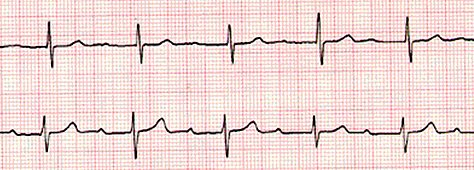

Exploración Física
Electrocardiograma (ECG)
Seleccione una Solución IV
Reporte - Química Sanguínea
| ESTUDIO | RESULTADO | RANGO NORMAL |
|---|---|---|
| Glucosa | 66 mg/dL | 65 a 100 |
| Sodio | 138 mmol/L | 135-145 |
| Potasio | 4.0 mmol/L | 3.5-5.0 |
| Calcio | 8.9 mg/dL | 8.5-10.5 |
| Creatinina | 0.7 mg/dL | 0.6-1.2 |
| BUN | 18 mg/dL | 7-20 |
🔈 Reproduciendo audio...